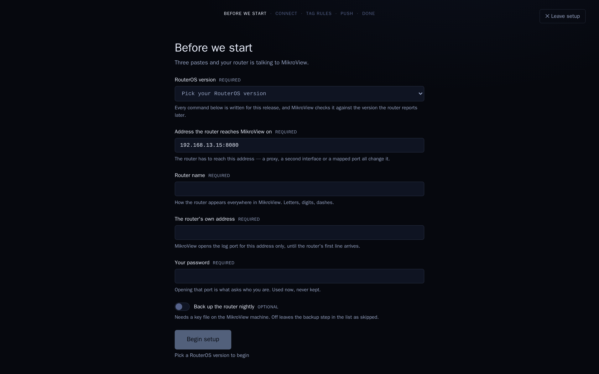
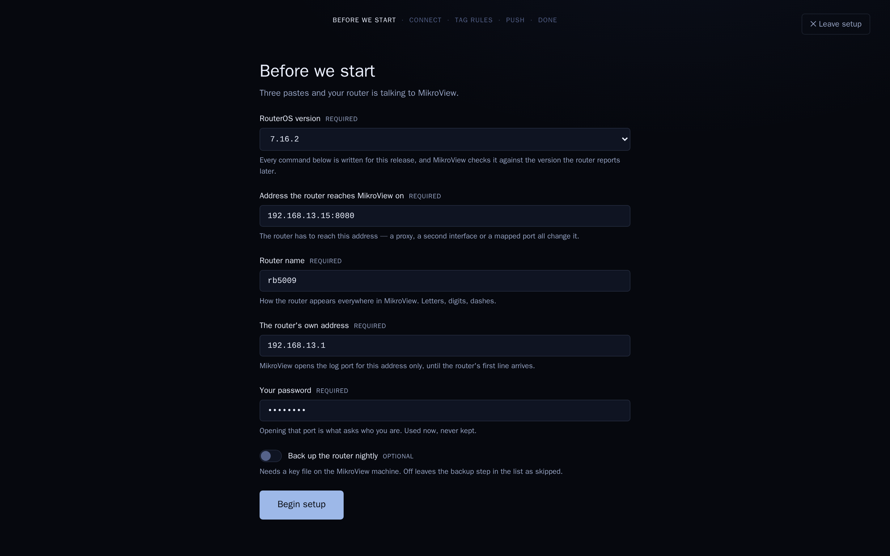
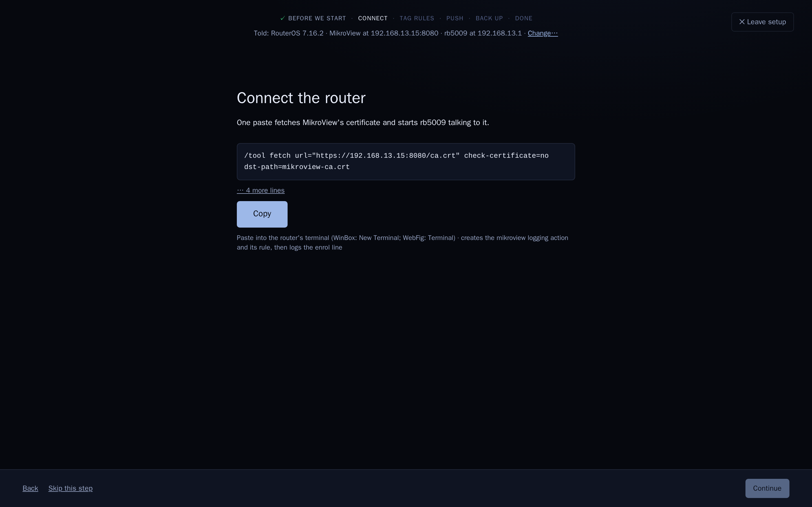
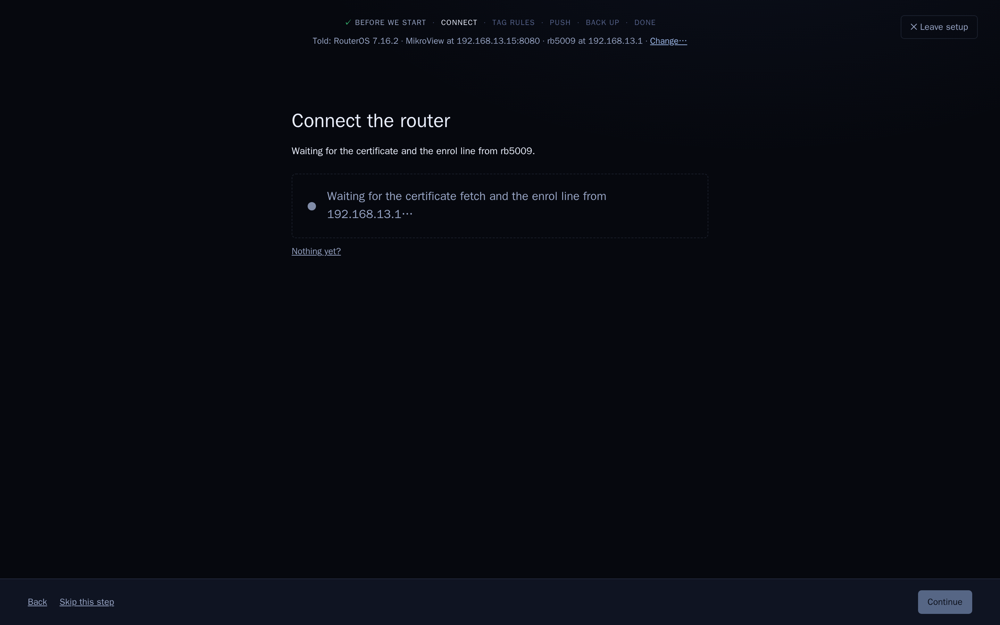
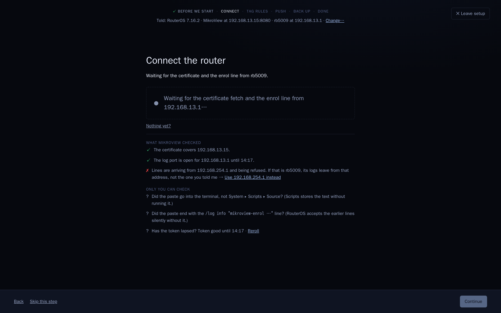
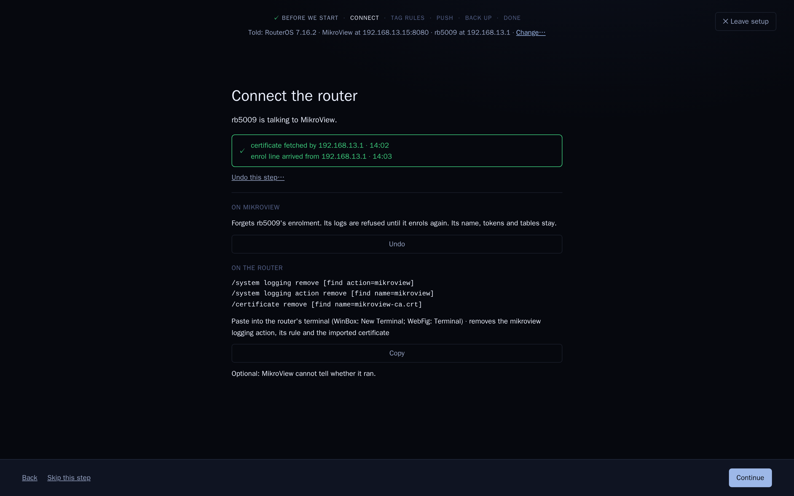
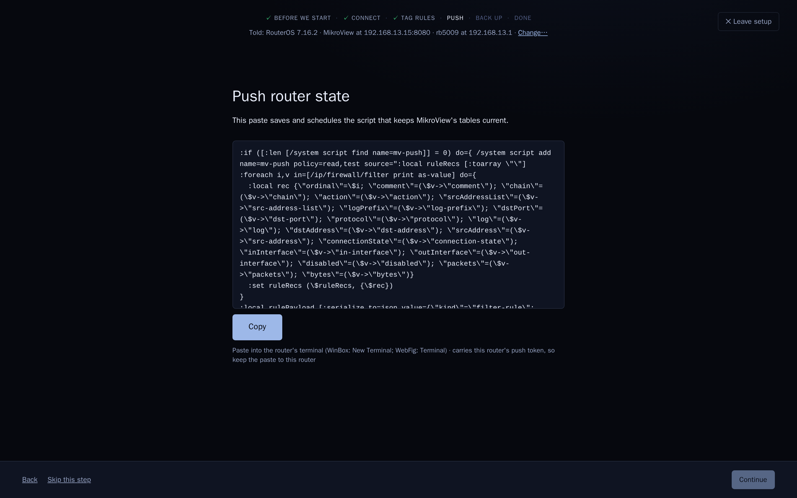
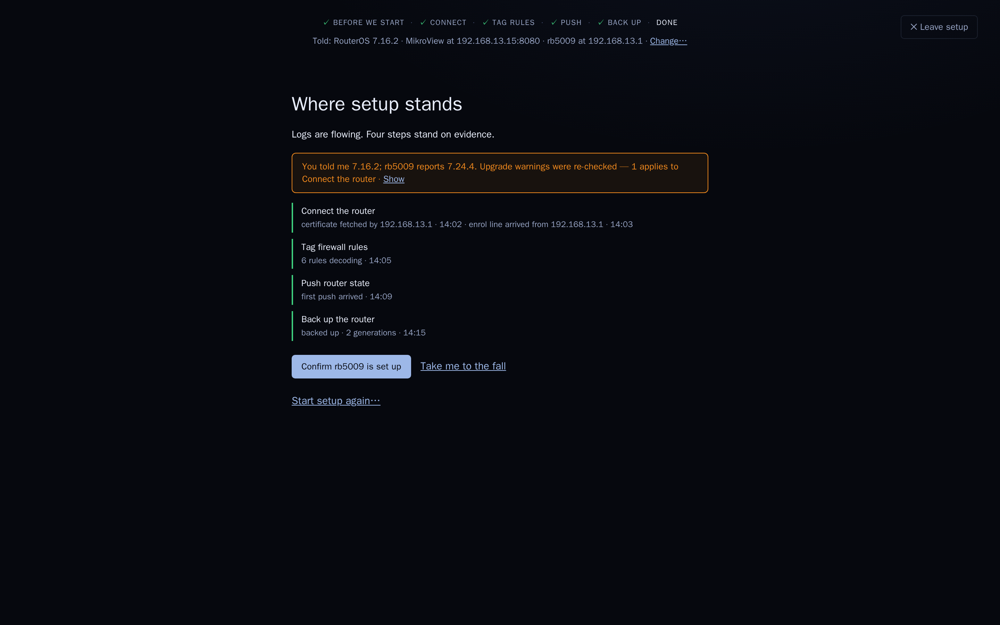

Nine scenes, dark only, 1440×900 each. Same data story as direction T: instance 192.168.13.15:8080, router rb5009 at 192.168.13.1 (RouterOS 7.16.2), other address 192.168.254.1, clock from 14:02. See README.md and the full scene page.

Shows: the form; Begin disabled with its reason.

Shows: all Required filled, backup switch off; Begin enabled.

Shows: told strip; progress rail; the move open with the block folded and Copy primary.

Shows: the wait screen — large observation line, pulsing dot; drawer closed.

Shows: the two lists of §4, with the 192.168.254.1 cross.

Shows: the two-line receipt; §5's two blocks (On MikroView / On the router).

Shows: the folded block opened, token inside, one Copy, caption.

Shows: four-row ledger with the §6 amber line; primary Confirm rb5009 is set up, secondary Take me to the fall; Start setup again… at the foot.